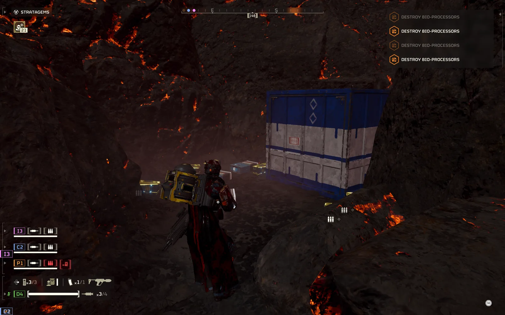
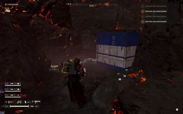

山 Cache
 Mountain Cache
Mountain Cache
基本信息 信息
阵营
描述
the 山 Cache is a 小型 超级地球 建筑, which can be found during missions.
概述
the 山 Cache is a 小型 超级地球 建筑, which can be found during missions. It consist of 物资 and a Cargo 容器 embedded within the 山.
Minor Point Of Interest
| 变体 | 图像 | 目录 | 注意 |
|---|---|---|---|
| 山地补给点 |  |
* 物资 |